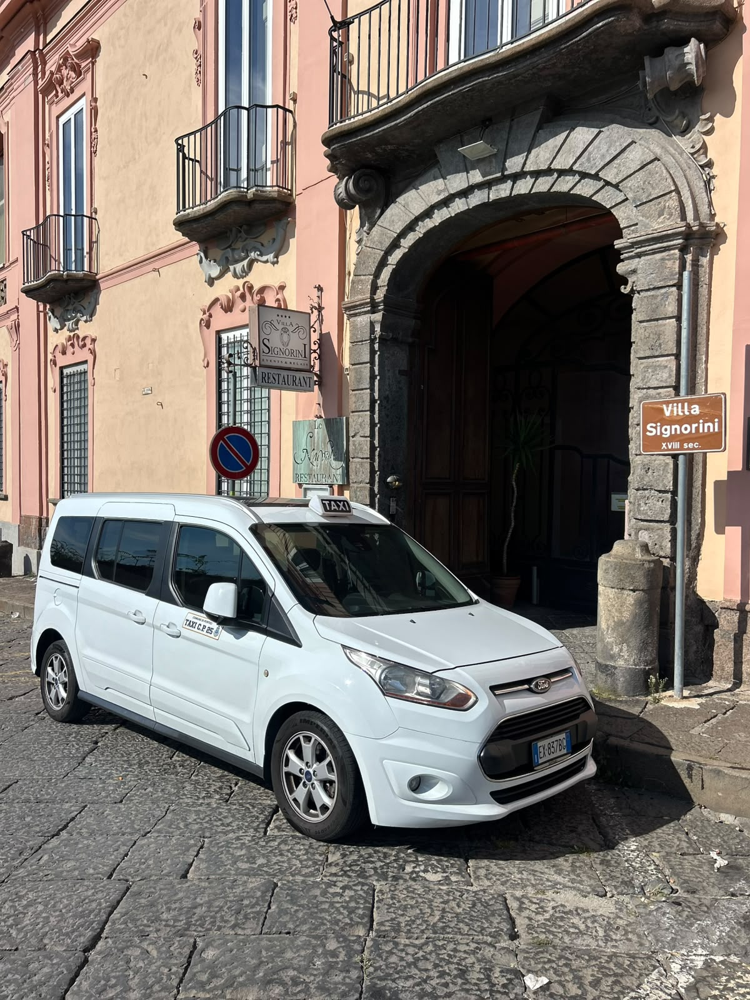
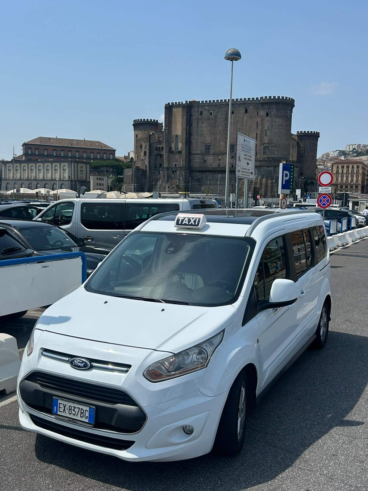

Aeroporto Napoli
Collegamenti da e per Capodichino, con spazio per bagagli e servizio su prenotazione.
H24 · Portici, San Giorgio, Ercolano
Transfer privati, taxi e corse su prenotazione per aeroporto, stazioni, porto, hotel, ospedale e mete turistiche in Campania. Veicolo spazioso, guida locale, risposta rapida.

Servizi
Collegamenti da e per Capodichino, con spazio per bagagli e servizio su prenotazione.
Napoli Centrale, Molo Beverello, Calata Porta di Massa e punti di arrivo turistici.
Pompei, Ercolano, Vesuvio, Sorrento e Costiera Amalfitana con autista locale.
Trasferimenti per clienti, visite, eventi, ristoranti, hotel e Ospedale del Mare.
Esperienze
Perfetto per aeroporto, stazione, porto o ospedale quando l'orario conta più di tutto.
Pompei, Vesuvio, Ercolano o Costiera con tappe concordate e guida locale.
Transfer per hotel, ristoranti, eventi e appuntamenti con un contatto diretto.
Tratte richieste
Come funziona
Indica partenza, destinazione, numero passeggeri, bagagli e orario.
Concordi punto di incontro, orario e tariffa prima della corsa.
Il taxi arriva nel luogo stabilito e ti porta a destinazione.
Flotta
Ford Tourneo Connect bianco con insegna taxi, ideale per spostamenti urbani, corse H24 e transfer fuori città. Le immagini sono reali, scattate tra Portici e Napoli.

Perché sceglierci
Zone servite
Il servizio copre le tratte più richieste da Portici verso aeroporti, stazioni, porto, ospedali, hotel, ristoranti e località turistiche. Per corse fuori zona puoi chiedere un preventivo diretto.
Chiedi disponibilitàFAQ
Sì. Taxi H24 Portici è disponibile tutti i giorni su chiamata o prenotazione, anche per partenze presto al mattino o arrivi serali.
Sì. Puoi richiedere transfer da Portici verso Aeroporto di Napoli Capodichino, Napoli Centrale, porto e altre destinazioni in Campania.
Sì. Le zone principali includono Portici, San Giorgio a Cremano, Ercolano, San Giovanni a Teduccio, San Sebastiano al Vesuvio e Napoli.
Invia su WhatsApp partenza, destinazione, orario, numero passeggeri e bagagli. Riceverai conferma e indicazione della tariffa prima della corsa.
Contatti